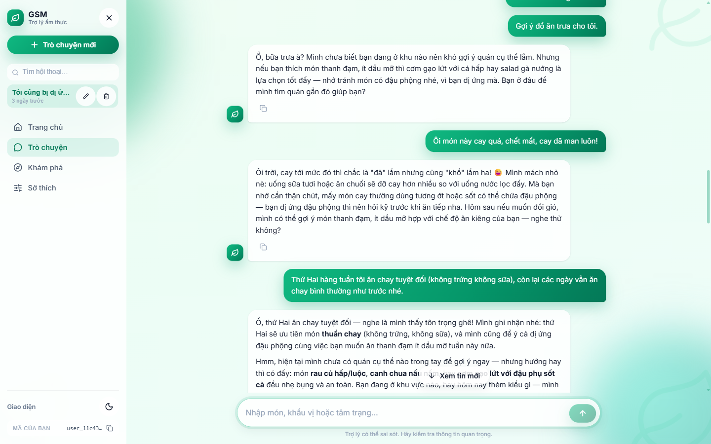
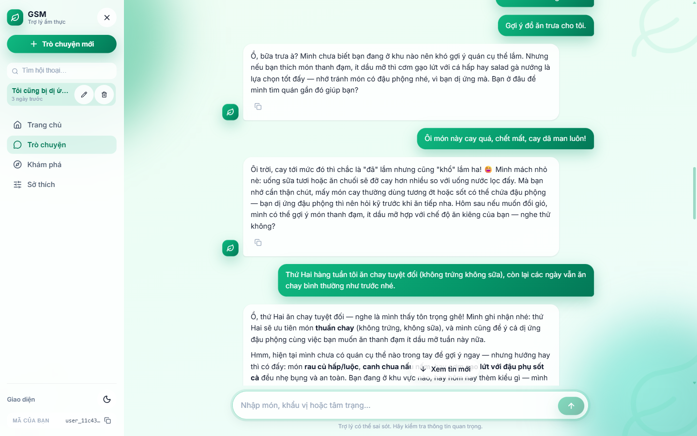
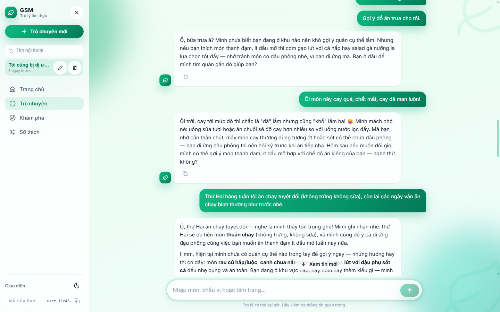
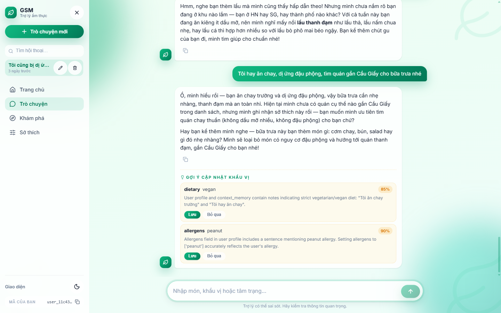
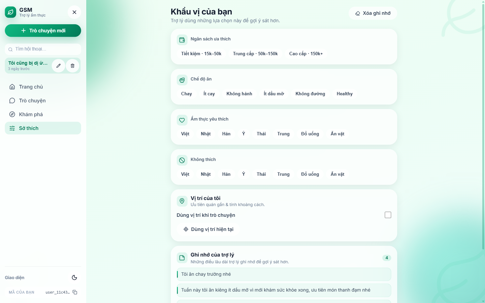

Bộ nhớ & cá nhân hoá — Sprint 2 (01/08 → 17/08/2026)
Tiếp nối Sprint 1 (trục Customer end-to-end, 39/39 GT eval).
Sprint 2 biến lời hứa "trợ lý ghi nhớ người dùng" thành hiện thực:
kho sở thích hợp nhất, bộ nhớ 3+1 lớp, ràng buộc chủ động, hệ metrics đánh giá.
4.Kết quả đánh giáTests · GT eval · memory eval 28 case · metrics
5.DemoẢnh demo UI chạy thật — memory, suggestion, lịch sử hội thoại
1Tổng quan Sprint 2
Sprint 1 bàn giao trục Customer hoạt động end-to-end nhưng agent chưa thật sự nhớ:
Preference Center ghi localStorage (mất khi đổi máy), context_memory luôn rỗng,
sở thích đã lưu không ảnh hưởng kết quả tìm kiếm. Sprint 2 đóng các khoảng trống đó.
Đã làm (4 khối chính):
Kho sở thích hợp nhất — 1 store chuẩn user_profiles; sửa tay (PATCH) và gợi ý qua chat (confirm) cùng một đường validate; FE cắt localStorage sang API.
Ràng buộc chủ động — dị ứng/diet lọc kết quả mọi lượt (kể cả "xin chào"), 3 tầng defense-in-depth.
Đánh giá + UX — metrics tất định (P/R/F1), bộ test memory 28 case, lịch sử hội thoại kiểu ChatGPT.
33Commits (01/08→13/08)
127 → 243Unit tests xanh
39/39GT eval PARITY
4/4Memory FAIL đã đóng
Tóm tắt Sprint 2.
Trước đây trợ lý mỗi lần chat là "quên hết": người dùng nói ăn chay, dị ứng gì đó thì trợ lý ghi vào sổ,
nhưng khi gợi ý quán thì vẫn quăng đại những quán vi phạm — nhớ mà không dùng. Sở thích chỉ nằm trong trình duyệt,
đổi máy là mất. Sprint 2 sửa tận gốc: mọi sở thích giờ lưu ở máy chủ, người dùng sửa tay hay chấp nhận gợi ý
cũng về một chỗ; những điều hệ thống "nhớ" được chia theo độ bền — khẩu vị thì nhớ mãi, chuyện kiêng khem có thời hạn
tự hết, nói "hết dị ứng rồi" thì xoá luôn cái cũ thay vì ghi thêm chữ mới đè lên. Quan trọng nhất: mọi gợi ý đều bị
kiểm tra qua ràng buộc an toàn trước khi tới người dùng — ai dị ứng gì thì không bao giờ thấy quán món đó,
kể cả khi chỉ vào hỏi han xã giao. Cuối cùng là trải nghiệm quen thuộc kiểu ChatGPT: lịch sử trò chuyện lưu lại,
đổi tên xoá bỏ tìm lại được, mở phiên cũ thấy đủ ảnh như ban đầu.
2Use case mục tiêu
UC
Nhóm
Mô tả
Sprint 1
Sprint 2
UC-04
Customer
Restaurant search — tra cứu món/giá/khoảng cách (Haversine), lọc hard-constraint end-to-end
Hoàn thành
Giữ + tăng cường (match-score graded, price-word normalizer)
UC-05
Customer
Preference + Context — gợi ý theo sở thích đã xác nhận + bối cảnh (thời tiết/vị trí)
Memory & an toàn (mở rộng UC-05) — ghi nhớ xuyên phiên, dị ứng/diet lọc chủ động, rút lại, TTL
—
Mới: 3+1 lớp bộ nhớ, 4 FAIL đóng
UC-01/02/03
Merchant
Diagnosis / Recommendation / Competitor
Design + data
Track đồng đội Minh — ngoài phạm vi
Ví dụ UC-M (chạy thật). Người dùng: "Tôi hay ăn chay, dị ứng đậu phộng" →
agent đề xuất 2 delta (chay trường 85%, dị ứng đậu phộng 90%) kèm evidence → bấm Lưu → ghi vào profile.
Lượt sau mọi gợi ý đều né đậu phộng + ưu tiên chay. Nói "hết dị ứng rồi" → note cũ bị xóa, không còn chặn.
3Pipeline — 3 mức chi tiết
L1 · Input — Output (hộp đen)
Hình 1 — L1: hệ thống như hộp đen. Vào: câu hỏi + vị trí + bộ nhớ. Ra: câu trả lời + cards + gợi ý khẩu vị, mọi kết quả đã lọc theo ràng buộc an toàn.
L2 · Tổng quát (5 lớp)
Hình 2 — L2: 5 lớp tổng quát. Chữ đậm = phần Sprint 2 thêm/bổ sung trên nền Sprint 1 (API profile, ranking, constraints, memory, lịch sử).
L3 · Chi tiết theo component (pipeline 1 truy vấn)
Hình 3 — L3: pipeline chi tiết một truy vấn theo component — guards → nạp bộ nhớ 3 lớp → build constraints → crew 3 agent + ranking → enforce 3 tầng → output/persist; nhánh suggestion → confirm (propose-only).
4Kết quả đánh giá
243/243Unit tests xanh
39/39GT eval PARITY mỗi phase
82%Routing accuracy (metrics mới)
0 FAILMemory eval 28 case (tất định)
Hạng mục
Kết quả
GT metrics suite (mới)
Routing acc 82% · macro F1 0.80 — tất định, không judge; pred_action theo tools-presence
Memory eval 28 case
8 nhóm × span 15–20 session, dùng code production thật: 16 PASS · 2 PARTIAL (granularity) · 0 FAIL · 10 LLM-dep. 4 FAIL thật (peanut safety, stale allergy, TTL, FIFO) đã fix + verify live
Quality judge độc lập
Multi-run 3×2 judge: mean ~71%, phân loại stable-pass 22 / borderline 11 / stable-fail 6
Mỗi phase Plan A đều GT-eval PARITY 39/39 trước khi giữ; unit 127 → 243 xanh
5Demo
5.1 · Memory chi tiết (từng cơ chế)

Hình 4 — Ràng buộc tạm thời (TTL): "tuần này ăn kiêng ít dầu mỡ" → hệ thống ghi có thời hạn 7 ngày, tự hết; agent vừa đáp ứng nhu cầu hiện tại vừa nhớ ràng buộc.

Hình 5 — Rút lại (retraction): "hết dị ứng đậu phộng rồi" → note cũ bị xóa (không ghi đè mâu thuẫn); agent mừng cùng user và gợi ý lại món có đậu phộng — trước đó món này bị chặn.

Hình 6 — Sau khi rút — lượt kế tiếp: user chủ động hỏi món ăn vặt có đậu phộng → agent gợi ý thoải mái (gỏi cuốn, salad đậu phộng rang), KHÔNG còn confirm-gate — bằng chứng ràng buộc cũ đã gỡ sạch.Hình 7 — Recap bộ nhớ: "Bạn nhớ những gì về tôi?" → agent liệt kê đúng trạng thái CUỐI: hết dị ứng đậu phộng, vẫn kiêng dầu mỡ tuần này, không còn giới hạn ngân sách — mọi thay đổi qua các lượt đều cập nhật nhất quán.
5.2 · Toàn cảnh luồng

Hình 8 — Suggestion trong chat + lịch sử sidebar: khai báo "ăn chay, dị ứng đậu phộng" → 2 delta có evidence + mức tin cậy; bấm Lưu ghi vào profile (propose-only: agent chỉ đề xuất). Sidebar: phiên cũ "3 ngày trước" (timestamp đúng giờ VN).

Hình 9 — Preference Center sau khi xác nhận: "Đã đồng bộ với máy chủ"; Ghi nhớ của trợ lý hiển thị context_memory (chay trường, kiêng dầu mỡ tuần này, thứ Hai chay tuyệt đối); nút Xóa ghi nhớ có confirm.
Báo cáo mô tả trạng thái đến 17/08/2026, tiếp nối Báo cáo Sprint 1 (01/08/2026).
Chi tiết kỹ thuật: docs/system-architecture.md · plan + eval reports trong plans/.
Trục Merchant (UC-01/02/03) do đồng đội Minh thực hiện.